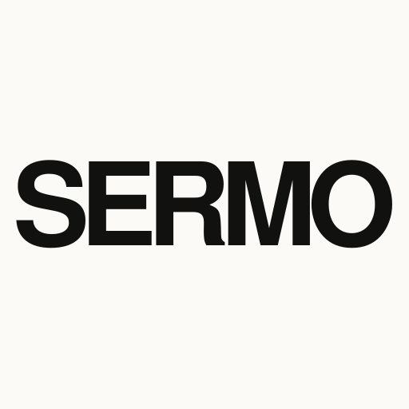
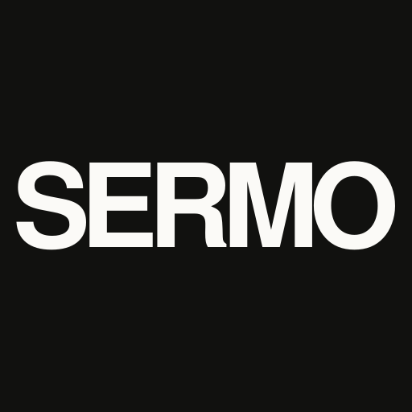
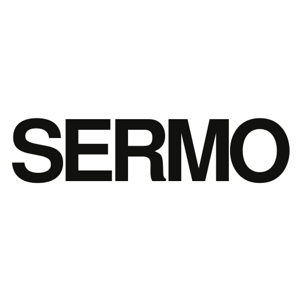
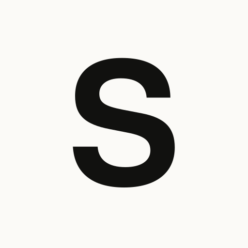
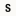
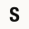
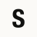
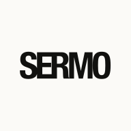

SERMO / IDENTITY 2026
SERMO
以 Helvetica Neue Bold、紧字距和大留白建立排版标识。主字标负责品牌表达，紧凑 S 标负责极小尺寸识别。




Optical size check

16
32
48
96192
16–48 px 使用紧凑 S 标；64 px 以上使用完整 SERMO 字标。Maskable 版本为系统圆形、圆角矩形裁切预留了安全区。